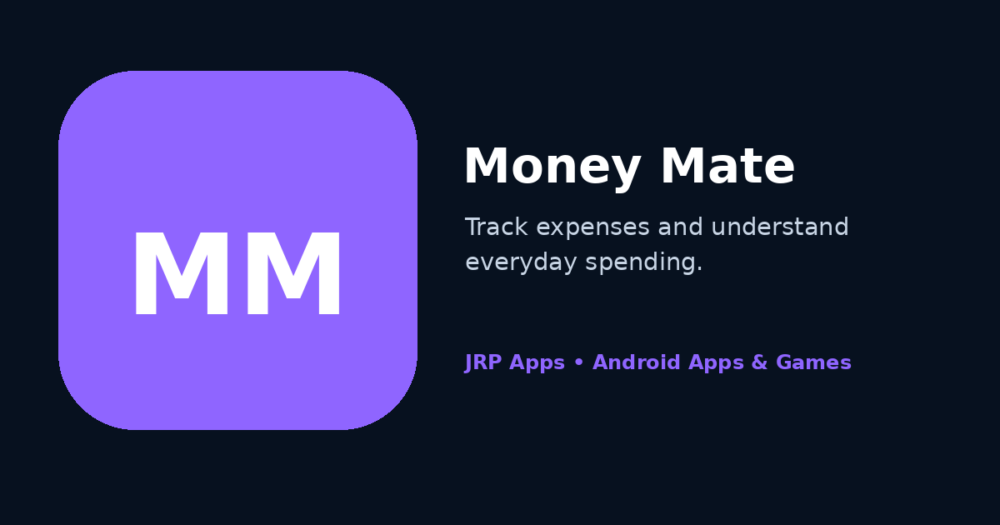
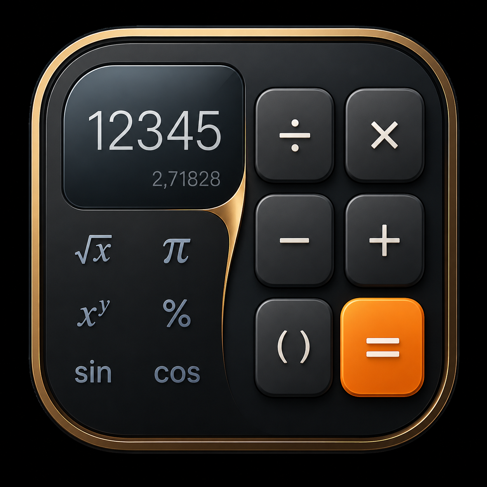

A practical personal expense tracker for recording transactions, organising spending and turning everyday financial entries into understandable summaries.
Money Mate helps solve the everyday problem of losing track of small purchases, irregular income and repeated household costs. Instead of relying on memory or scattered notes, users can record transactions in one organised Android app and review how money moves over time. Its purpose is to create a routine for entering, categorising and understanding spending.
The experience is built for frequent, short sessions. A transaction can be added when it happens, then reviewed later through history, categories and visual summaries. This supports both immediate record keeping and later review. Patterns help users identify recurring costs, compare categories and make informed decisions.
Money Mate works well with other focused tools in the portfolio. A user can calculate a discount or monthly total in Calculator Pro before recording it, or use Fit Mate to track a separate personal goal. Each app keeps its own purpose clear while supporting a more organised routine.
Features and Why They Matter
Quick income and expense entry. A direct entry flow reduces the effort required to record money at the time it is received or spent. This matters because financial tracking becomes more accurate when users do not postpone entries or depend on memory at the end of the week.
Transaction history. A chronological record gives users a dependable place to review earlier entries. It can help confirm a purchase, check whether a payment was recorded, compare dates or understand how a current balance was reached.
Category-based organisation. Categories turn a long list of numbers into meaningful groups such as food, travel, bills or income. Grouping entries makes spending patterns easier to recognise and allows users to focus on the areas that matter most to their goals.
Reports and visual insights. Summaries and charts help translate raw transaction data into a clearer financial picture. Visual comparisons can reveal which categories are growing, where spending is concentrated and how activity changes over time.
Simple budgeting support. The app supports better money habits by making records visible and reviewable. Even without complex accounting, consistent tracking can help users plan upcoming expenses, reduce avoidable purchases and understand the effect of small daily choices.
Clean Material Design workflow. Readable forms, consistent actions and responsive layouts keep routine entry comfortable on supported Android phones. A focused interface reduces distraction and unnecessary navigation.
Who Should Use It
Money Mate is useful for individuals beginning a personal budget, families monitoring household costs, students managing allowances, freelancers separating income and expenses, and anyone who wants a clearer view of daily spending. For example, a commuter can record travel costs as they occur, while a household can compare grocery and utility categories at the end of the month.
The app is intended for practical personal tracking rather than professional accounting or regulated financial advice. Users who want a straightforward record of everyday activity can benefit from its direct workflow, while those with more advanced needs can still use the history and reports as a useful personal reference.
Privacy-First Data Handling
Financial records can reveal sensitive details about habits and priorities, so Money Mate is developed with a local-first, privacy-conscious approach. Routine transaction entry is designed to remain under the user’s control rather than requiring public sharing or a social profile.
The app aims to avoid permissions that are not necessary for its stated expense-tracking functions. Core records are intended to remain useful offline; connectivity may still be needed for installation, updates, support, advertising or clearly identified optional services. Users should review the Money Mate privacy policy for product-specific data handling information.
Privacy-first development also means keeping explanations understandable. JRP Apps seeks to limit data collection to what is reasonably required for operation, security, support or optional features and provides a direct support channel for questions.
Fast, Lightweight Android Performance
Money Mate is designed for frequent entries, so startup and navigation need to feel immediate. Lightweight screens, efficient local data handling and restrained animation help users add a transaction quickly without waiting through an elaborate workflow. Reports are organised to remain readable while processing recorded information efficiently.
The responsive Material Design interface adapts to supported Android phone sizes with accessible touch targets and clear typography. Battery-friendly behaviour is supported by avoiding unnecessary background activity during ordinary local tracking. Android 11 and later is the stated compatibility baseline, with updates focused on stability, responsiveness and dependable record handling.
Offline Use and Regular Updates
Core transaction entry, history and local summaries are designed to remain useful without a continuous connection. A network may still be needed for downloading the app, receiving Play Store updates, opening support links, advertising or optional connected features. Users should keep the latest available release installed to receive compatibility and reliability improvements.
App Preview

Promotional preview for Money Mate, presenting the app as a focused Android tool for personal expense and income tracking.
Frequently Asked Questions
What is Money Mate used for?
Money Mate helps users record income and expenses, organise transactions by category, review history and understand everyday spending through summaries and reports.
Who can benefit from Money Mate?
Individuals, students, families, freelancers and anyone building better money habits can use it for practical personal tracking.
Is Money Mate a banking or accounting service?
No. It is a personal expense-tracking app and is not a bank, payment provider, professional accounting system or source of regulated financial advice.
Can I use Money Mate offline?
Core local transaction entry and review are intended to remain useful offline. Installation, updates, advertising, support links or optional connected services may require internet access.
Does Money Mate require a public account?
Routine personal tracking is designed not to require a public profile. Any optional connected capability would be described separately.
How are financial records handled?
Money Mate follows a privacy-conscious approach intended to keep ordinary records under the user’s control, with product-specific details provided in its privacy policy.
Which Android versions are supported?
The website lists Android 11 or later as the supported requirement. Google Play may provide additional device-specific compatibility information.
How can I report an incorrect total or app issue?
Contact support@jrphub.com and include the device, Android version, relevant screen and steps that produced the issue, without sending sensitive financial details unnecessarily.
Related Apps and Games
Use Calculator Pro to check percentages or totals before recording them. For another habit-focused tool, Fit Mate supports fitness routines, while Sudoku offers a focused logic break.

Calculator ProA modern calculator for everyday arithmetic and scientific work.
Benefit: check totals, percentages and formulas quickly.